The refreshed Order Up experience, bold imagery and clear branding up front.
Refreshing a legacy ordering platform for enterprise F&B brands
The old online ordering design was a legacy design that felt outdated. This project was about refreshing the design to be more relevant for larger enterprise F&B businesses.
Scope of work included planning, research, concept, designing, and handover.
The refreshed Order Up experience, bold imagery and clear branding up front.
In today's restaurant scene, online ordering has become a common way to receive orders from customers, whether it's from walk-in table ordering, a pickup link, or delivery.
Order Up, an online ordering web platform by Nomni, had an outdated design. The UX worked flat and functional, but had limited capability to customize a merchant's branding in the UI.
Large F&B brands with mature brand assets expect to express their branding strongly through the online ordering platform. This gap caused them to churn.
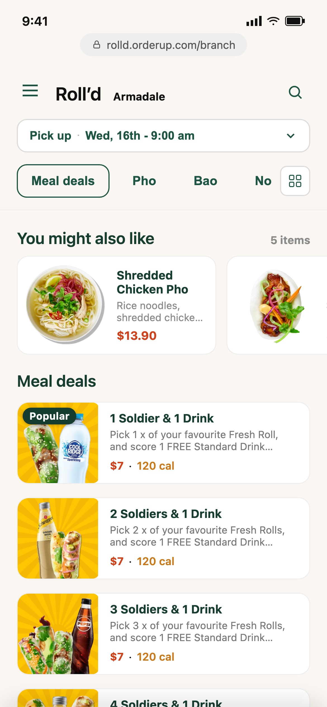
The previous Order Up experience, flat, functional, and hard to brand.
To improve the user interface and user experience to keep up with today's market, and help F&B brands feel represented using it.
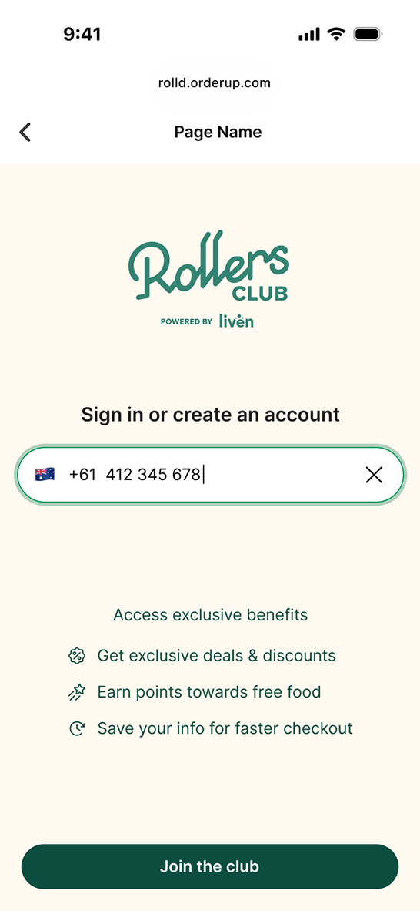
Giving merchants room to express their own branding, not just the platform's.
This project was a design-team initiative proposed to the product department, addressing the main goal above. Several considerations shaped the design.
F&B apps today lean on clean, larger imagery, and bigger touch points.
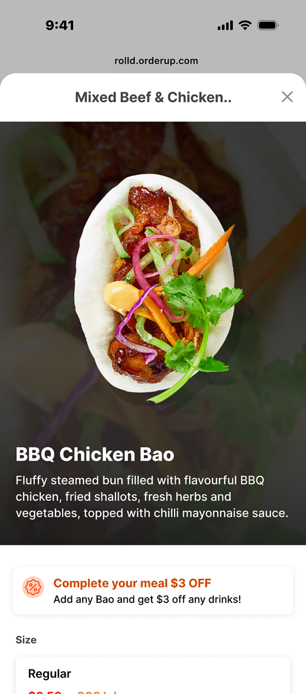
Bigger imagery puts the food, and the merchant's branding, front and center.
The redesign also had to account for business goals, such as ways to add upselling, and ways for merchants to add marketing and promotion banners.
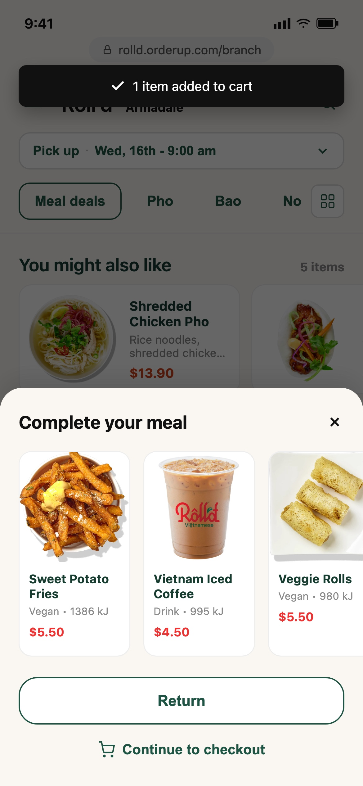
The before
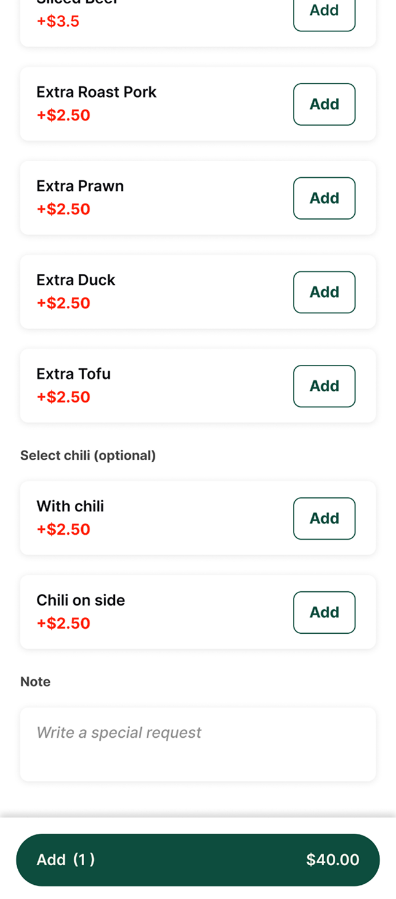
The after
Working in a fast-paced project meant thinking in the bigger picture of the entire journey and flows. A design stress test was also necessary to ensure the design was usable by different merchants. To keep the scope doable, I worked and prototyped divided per scope flow and shared with the team fast, prioritizing whatever issue mattered most on each page.
Since this platform is still operated under the POS backend, several elements needed to remain configurable, from menu text and button colors to the title bar and secondary button styling. I spoke with the onboarding team to learn how the backend worked, then mapped every token back to where it actually showed up on screen.
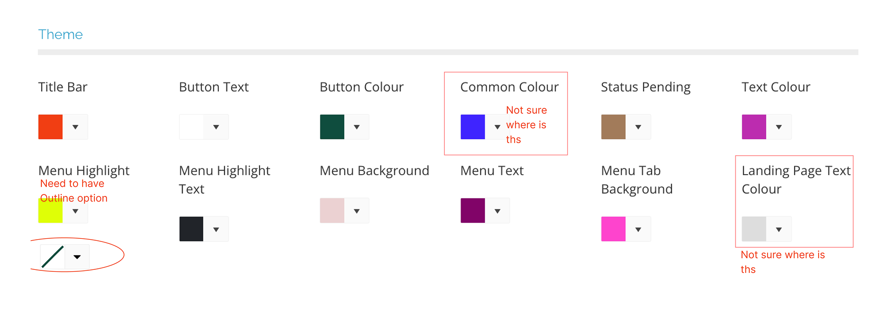
The backend theme configurator, some tokens still needed clarity on where they'd actually show up.
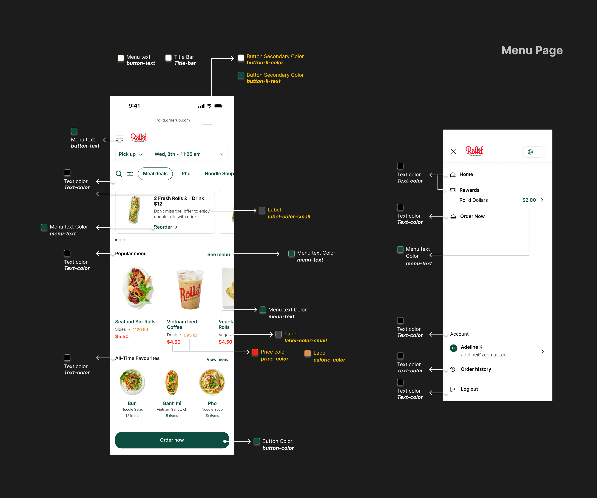
Mapping every configurable token back to its place on the menu page.
A design stress test confirmed the same template held up across different merchants, not just Roll'd's own branding, using one shared set of tokens.
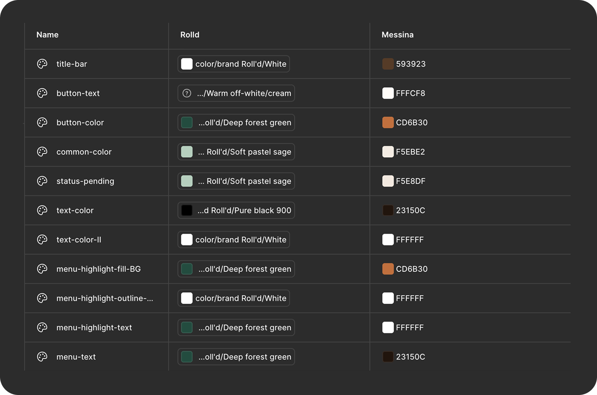
A shared token table kept color, text, and button styles consistent, no matter which merchant's palette was applied.
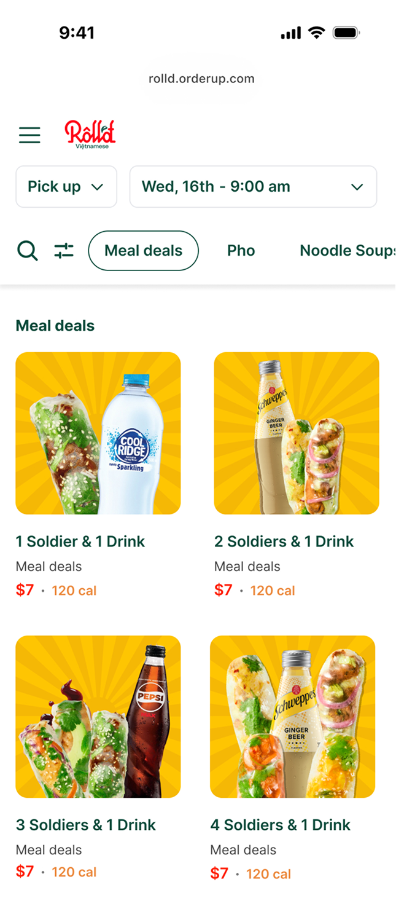
Roll'd
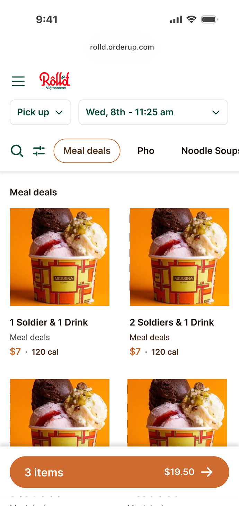
Messina
The same layout also had to hold up across order types, pickup, delivery, dine-in, and catering, not just one merchant's setup.
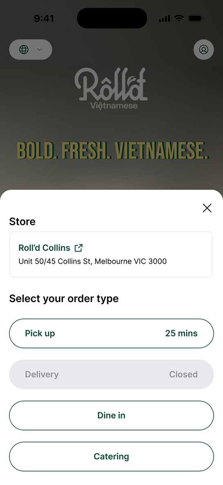
Checking the design holds up across every order type a merchant might offer.
Roll'd, the platform owner, is happy with the result, they can now express their brand better. When a merchant is able to represent their branding well on the platform, it reflects a good dining experience, which helps customers be more likely to return.